The Discrete Fourier Transform and its use in image procressing#
Jean Baptiste Fourier
{kind=link}
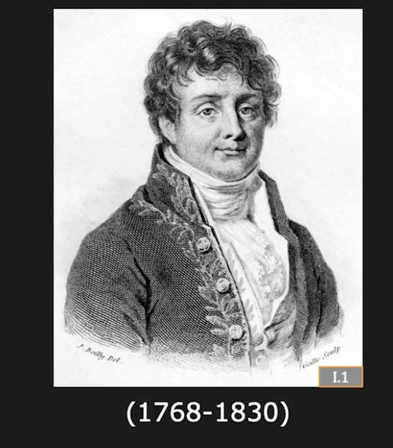
Complex numbers#
To introduce the Discrete Fourier Transform (DFT), a fundamental tool in signal and image processing, we need to mention complex numbers, which must be known to work with DFT.
I suppose you have encoutered complex numbers in your studies, but if not it is necessary to learn at least their min properties. You can found many tutorials on the web.
As an example, these are two usefule links:
https://www.mathsisfun.com/numbers/complex-numbers.html
https://www.cuemath.com/numbers/complex-numbers/
but many more exists!
A complex number can be written as: $\(z=a+ib\)$
The magnitude is the modulus of the complex number: $\(|z|=\sqrt{a^2+b^2}\)$ and geometrically represents the length of the vector form (0,0) to (a,b).
The phase is the angle that the vector of the complex number makes with the positive real axis. $\(\phi=arg(z)=arctan(\frac{b}{a})\)$

Using magnitude and pahse the complex number can be written as: $\(z=|z|e^{i\phi}\)\( by measn of the Euler formula: \)\(e^{i\phi}=cos(\phi)+isin(\phi)\)$
Example: $\(z=3+4i\)\( \)\(|z|=\sqrt{25}=5\)\( \)\(\phi=arctan(4/3)\simeq 0.93 rad(53.1)\)$
Fourier stated that any periodic function can be written as a linear combination of sinusoids.
{kind=link}
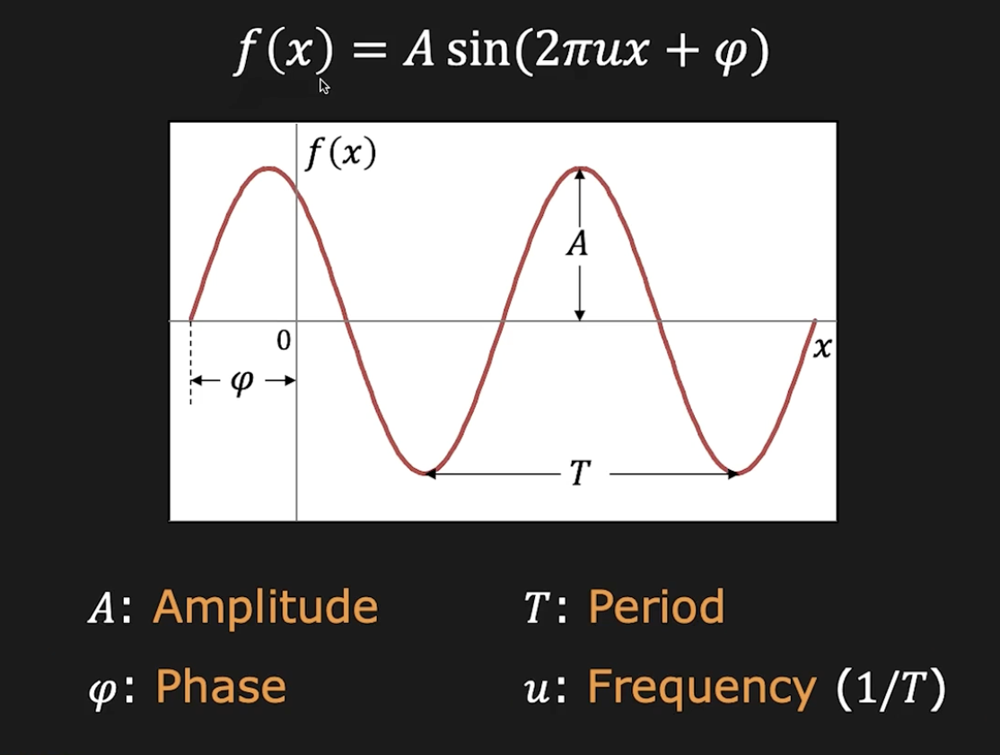
Example:
If you sum the sinuosids you obtain a better and better approximation of the square wave function.
{kind=link}
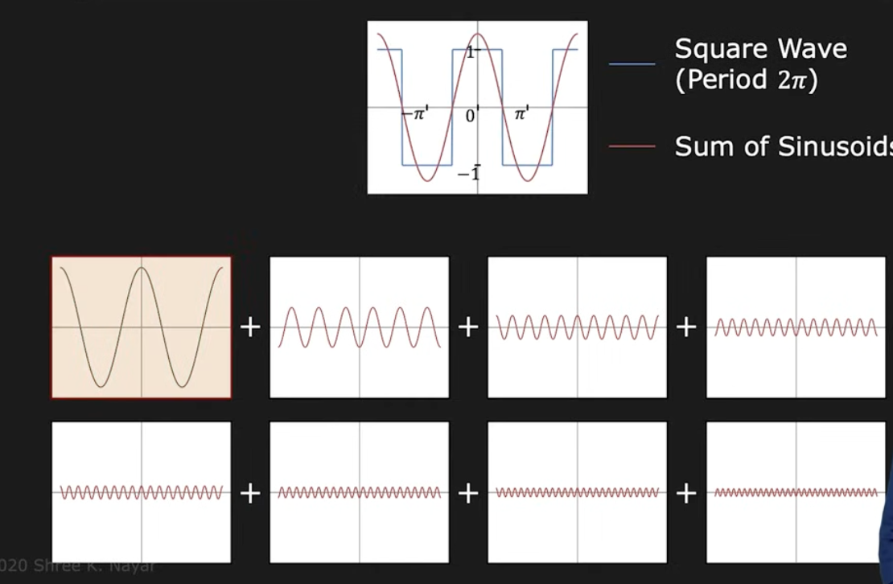
4 sinusoids:
{kind=link}
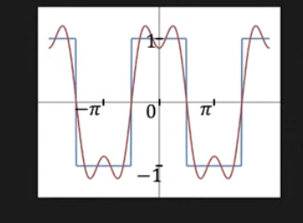
5 sinusoids:
{kind=link}
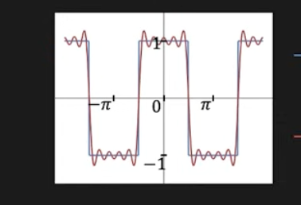
If you could add an infinite number of sinusoids you get the exact function.
The Fourier transform is a map from the space domain to the frequency domain.
{kind=link}
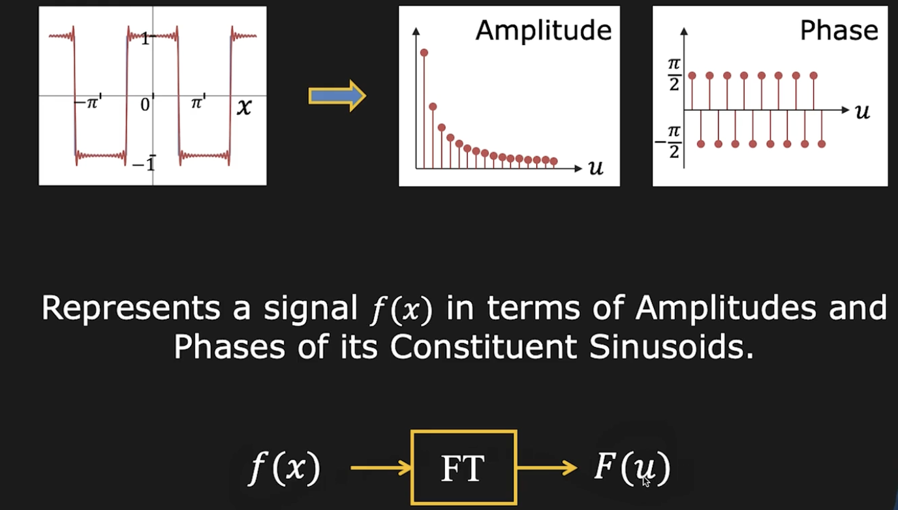
The Fourier transform#
This very clear video tutorial (especially in the first part) well introduces the Fourier transform, that is related to the Fourier series.
https://www.youtube.com/watch?v=mgXSevZmjPc
Each function (with some regularity properties) can be approximated by an infinite sum of sine and cosine functions with different amplitudes and frequencies:
The first components of the Fourier series:
{kind=link}
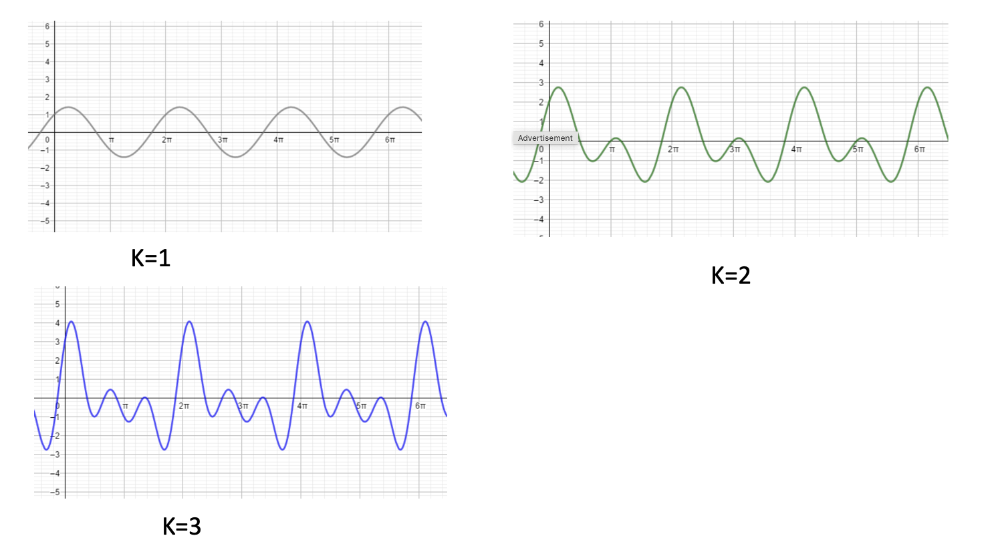
Examples of function approximation by means of few Fourier components:
{kind=link}
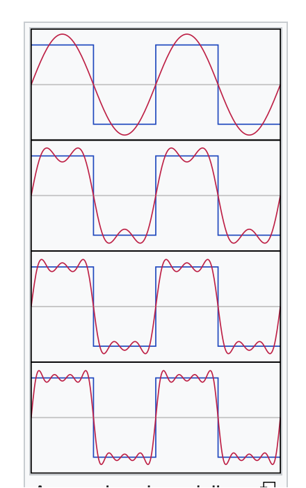
{kind=link}
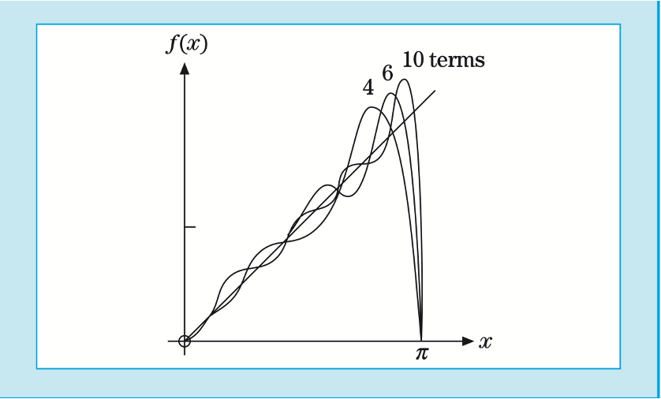
The continuous Fourier Transform#
Each function \(f(x)\) is then represented by knowing the characteristics, amplitude and frequency, of the terms of the sum approximating the function. We can say that the exact time function \(f(x)\) can be represented in the so called frequency domain by knowing the values of the coefficients \((A_k,B_k)\).
But how can we know these values for each different time function \(f(x)\)? By means of the so called Fourier transform, which computes the coefficients of the Fourier series.
The Fourier Transform (the continuous one) \(\mathcal{F}\) is a map that transforms a function in another function, between function spaces \(H\) and \(K\), where \(H\) is the space containing time functions \(f\) and \(K\) is the space contining frequency functions \(\hat f\):
where
The inverse Fourier transform (continuous) is the inverse map: $\(\mathcal{F}^{-1}:K \rightarrow H, \ \ \mathcal{F}^{-1}(\hat f)=f\)$ so that:
But which is the relation of the fourier transform with sinusoids?
{kind=link}
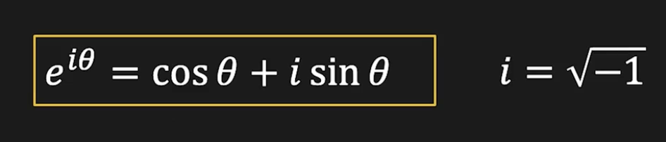
And why the Fourier Transform is a complex number?
Because it needs to store both the amplitude and the phase.
The Discrete Fourier Transofrm#
When we have a discrete set of function values instead of a continuous function, the continuous Fourier Transform is replaced by the Discrete Fourier Transform (DFT).
It is a transform that converts a finite collection of evenly spaced samples of a function into a collection of coefficients of a linear combination of complex sinusoids, ordered by increasing frequency.
The DFT provides the frequency domain representation of a signal, which is often more insightful than its time domain representation. By understanding the frequency components of a signal, we can perform various operations such as filtering, signal reconstruction, and more.
In the context of the DFT, each frequency component obtained from the transformation is expressed as a complex number, comprising both real and imaginary parts. The real component represents the amplitude of the cosine wave in the frequency domain, while the imaginary part corresponds to the amplitude of the sine wave. Together, these components provide a complete representation of the frequency characteristics of a signal.
Discrete Fourier Transform 1D#
The DFT is a linear invertible function $\(\mathcal F :C^n \rightarrow C^n\)$
Let \(f=(f_0,f_1, \ldots f_{N-1})\) a discrete signal, the DFT of \(f\):
where
It can be written as a matrix-vector product:
Note that i is the imaginary unit and the DFT is a vector of complex numbers, where the real component represents the amplitude of the cosine wave in the frequency domain, while the imaginary part corresponds to the amplitude of the sine wave.
The Inverse Discrete Fourier transform (IDFT) is a function
where
where
It holds that in real arithmetics:
Observe that the IDFT should be a vector of real numbers but due to finite arithmetic errors it can have a small imaginary part.
Tha algorithm for the computation of the DFT is called Fast Fourier Transform (FFT) and it has a computational complexity of \(O(Nlog_2(N))\) when \(N=2^p\) (i.e N is a power of 2).
Examples:
{kind=link}
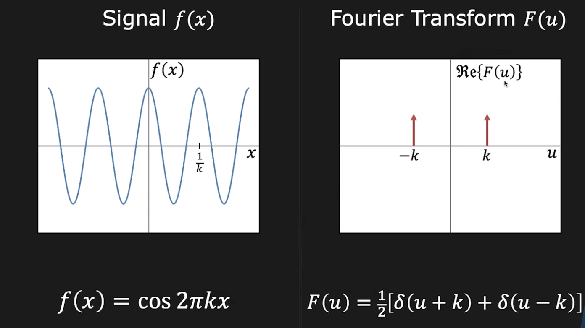
{kind=link}
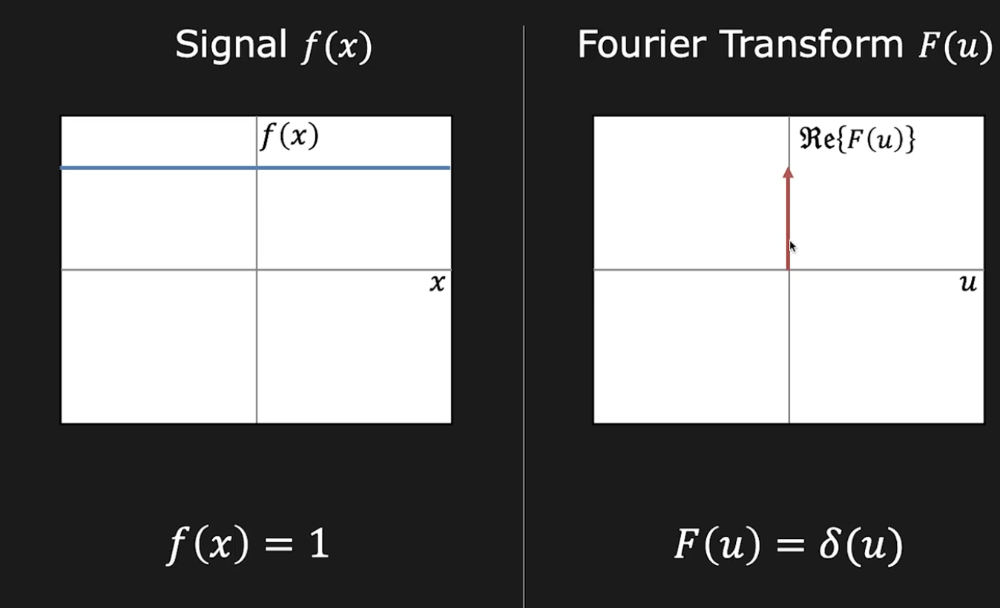
{kind=link}
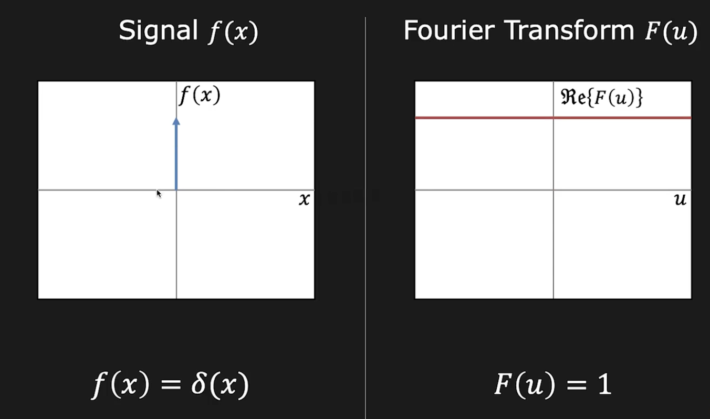
{kind=link}
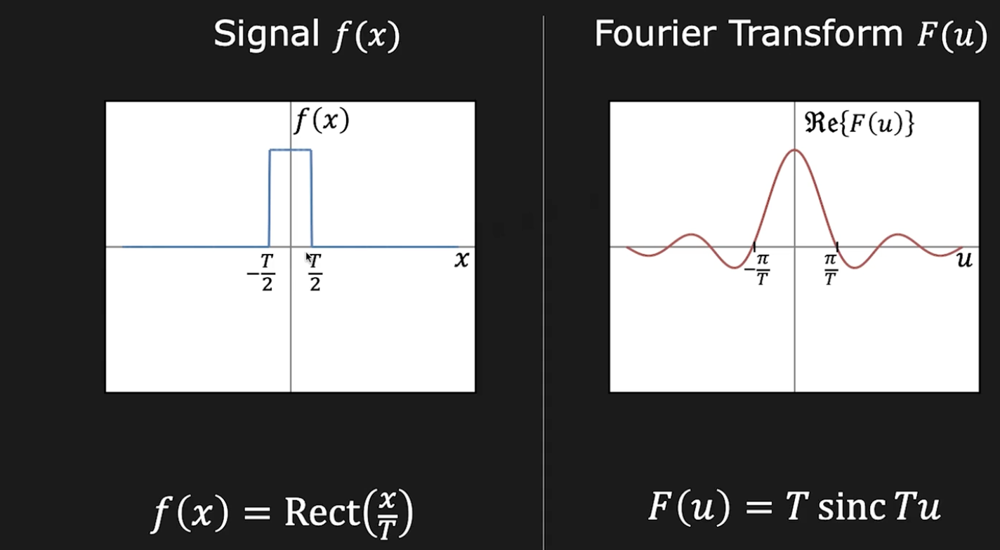
{kind=link}
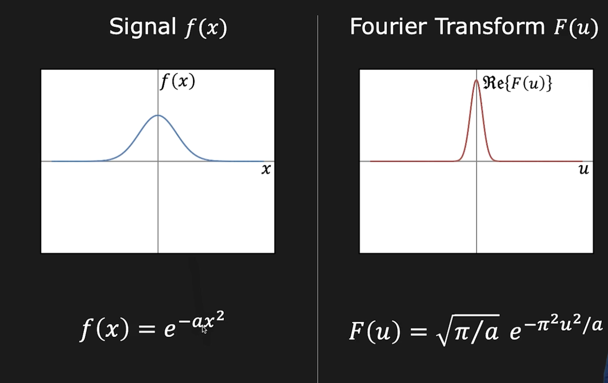
Relations of magnitude and phase with the Fourier Transform
Magnitude → “how much” of a frequency is present
Phase → “where” that frequency is positioned (structure)
That’s why:
keeping magnitude but randomizing phase → texture-like noise
keeping phase but changing magnitude → structure mostly preserved This is exactly the key idea behind Fourier image analysis.
The Convolution theorem#
Consider the convolution of the functions f and h:
and its Fourier transform G: $\(G(u)=\int_{-\infty}^{\infty} g(x)e^{-i2\pi ux}dx\)$
Then we substitute to \(g(x)\) the convolution of \(f\) and \(h\): $\(G(u)=\int_{-\infty}^{\infty} \int_{-\infty}^{\infty} f(x) h(x-\tau) e^{-i2\pi ux}d\tau dx\)$
We can now shift \(u\) in the exponential. Since the intergal over the entire real space this does not change the result, and separate the two integrals:
Wo observe that the first integral is the Fourier transform of \(f\): $\(F(u)=\int_{-\infty}^{\infty} f(x)e^{-i2\pi u \tau }d\tau\)$
and the second integral, if we set \(y=x-\tau\) (the extremes of the integral don’t change because they are the whole real space) is the Fourier transform of \(h\):
Hence the convolution \(f(x)*h(x)\) in spatial domain corresponds to the product \(F(u)\cdot H(u)\) in the frequency (or Fourier) domain.
It also true the opposite:
{kind=link}
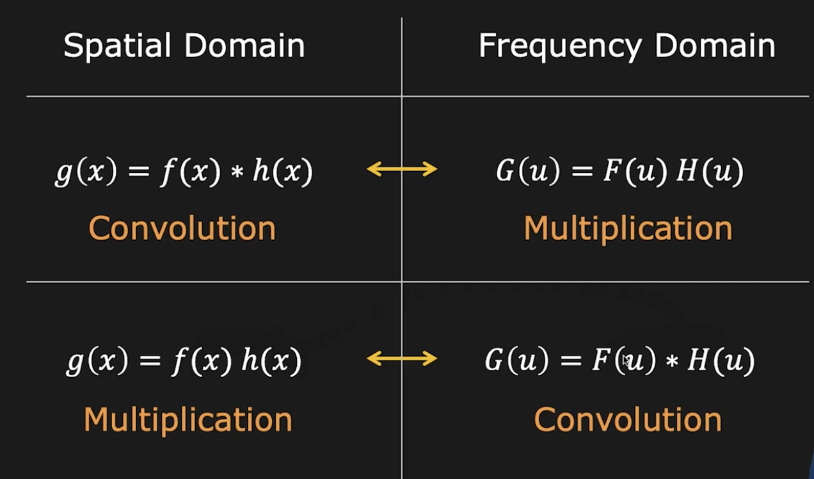
This is the basis of a very fast algorithm to perform the convolution between two functions (especially in 2D domain, where the cost is larger):
{kind=link}
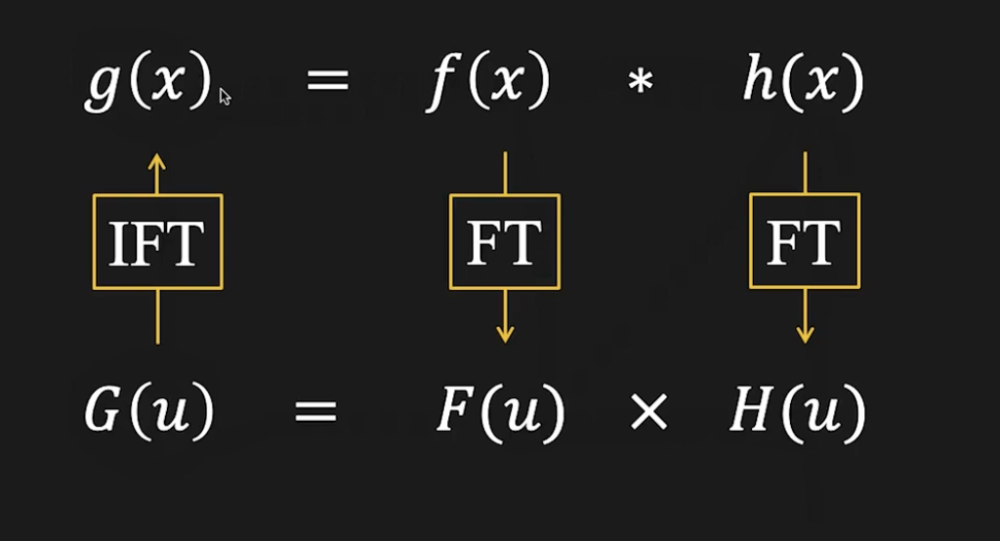
The convolution is then performed in the frequency domain with smaller objects.
The theorem also allows to think which are, in the frequency domain, the effects of a filter designed in the spatial domain and viceversa.
Example: Denoise a signal by means of gaussian deconvolution
{kind=link}
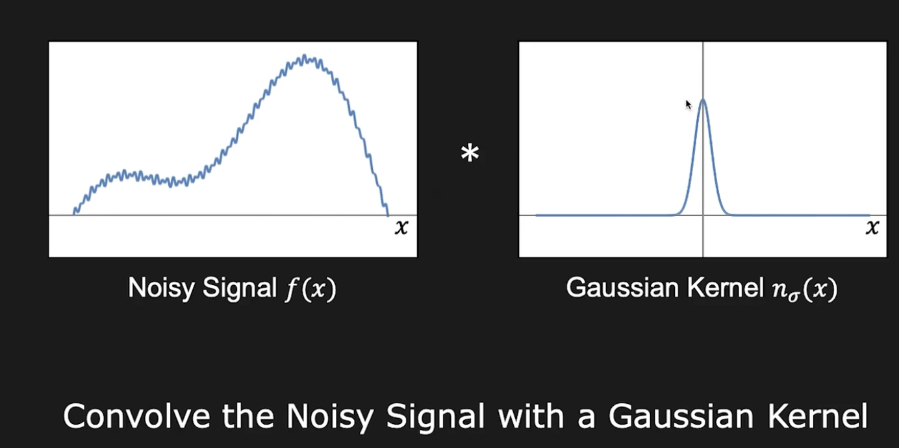
{kind=link}
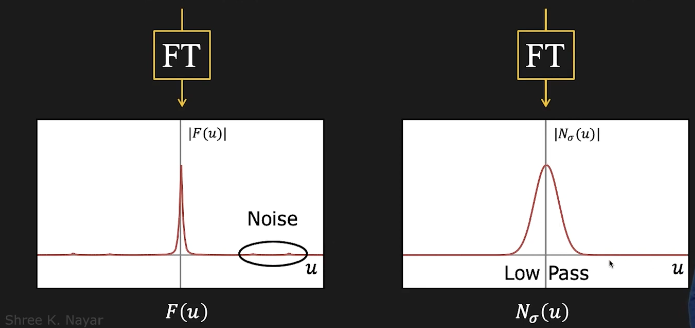
The noise in the Fourier space is in the low frequencies. The FT of a Gaussian function is again a Gaussian function. In the frequency (or Fourier) space we multipy the Fourier Transform and obtain the denoising filter in that space.
{kind=link}
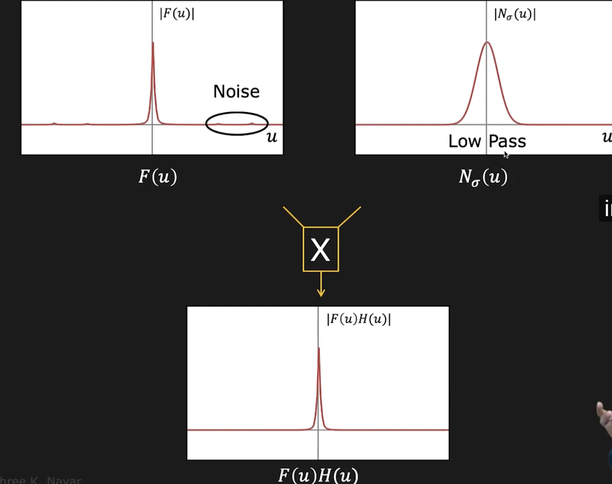
{kind=link}
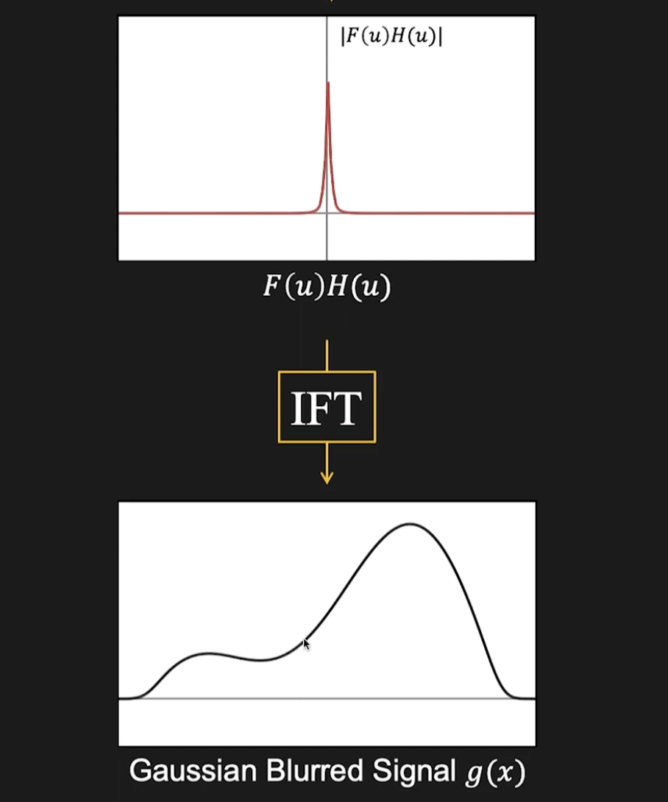
Discrete Fourier Transform 2D#
To deal with images, we must extend the DFT and IDFT to 2D as follows (where \(m,n\) are the spatial coordinates and \(k,l\) are the frequency coordinates):
DFT2: $\(\hat f_{k,l}=\sum_{m=0}^{N-1}\sum_{n=0}^{N-1} f_{m,n} e^{-i \frac{2 \pi}{N}(km+ln)}, \ \ m,n=0, \ldots N-1 \)$
IDFT2: $\( f_{m,n}=\sum_{k=0}^{N-1}\sum_{l=0}^{N-1} \hat f_{k,l} \frac{1}{N^2} e^{i \frac{2 \pi}{N}(km+ln)}, \ \ k,l=0, \ldots N-1 \)$
How to read the DFT of an image?
{kind=link}
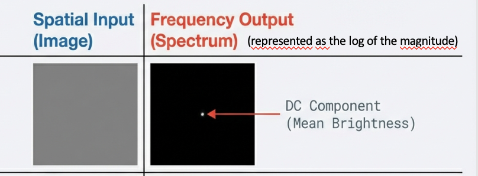
Examples.
The first image is a cosine function along x axis. The Fourier transform of a cisine function (as we have seen in 1D) is essentially one frequency (and its negative counterpart). The central point at 0 is due to the fact that the mean of the brightness is 0 (in a range [0,255] is 128 but it can be shifted to 0).
The second image is an image of a cosine function of higher frequency. We have still three dots but more separated because the frequecy has increased.
The third image is a sum of two cosine functions.
{kind=link}
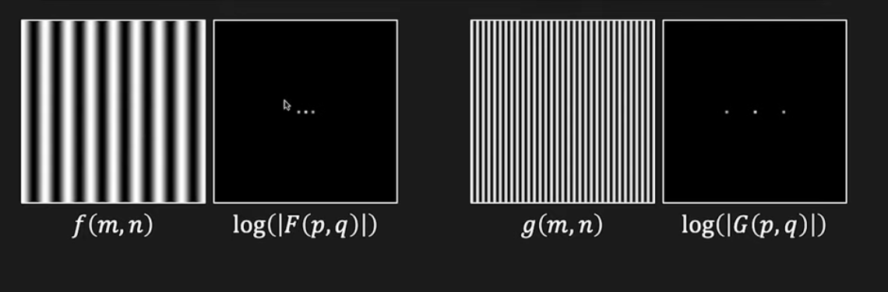
{kind=link}
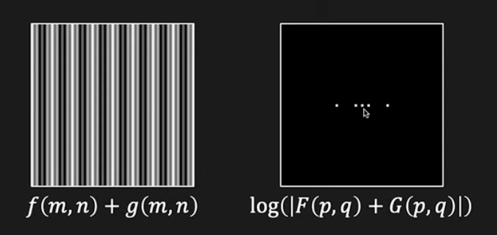


Examples with simple objects:
High frequencies are necessary to create the borders of the objects.
{kind=link}
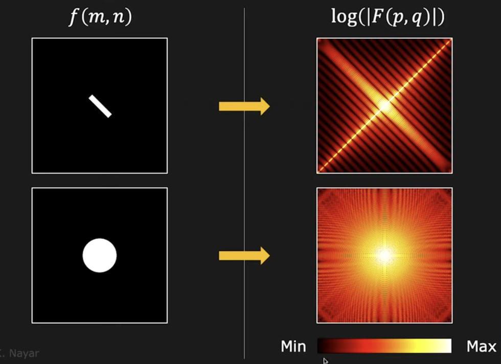
Examples with more natural images:
{kind=link}
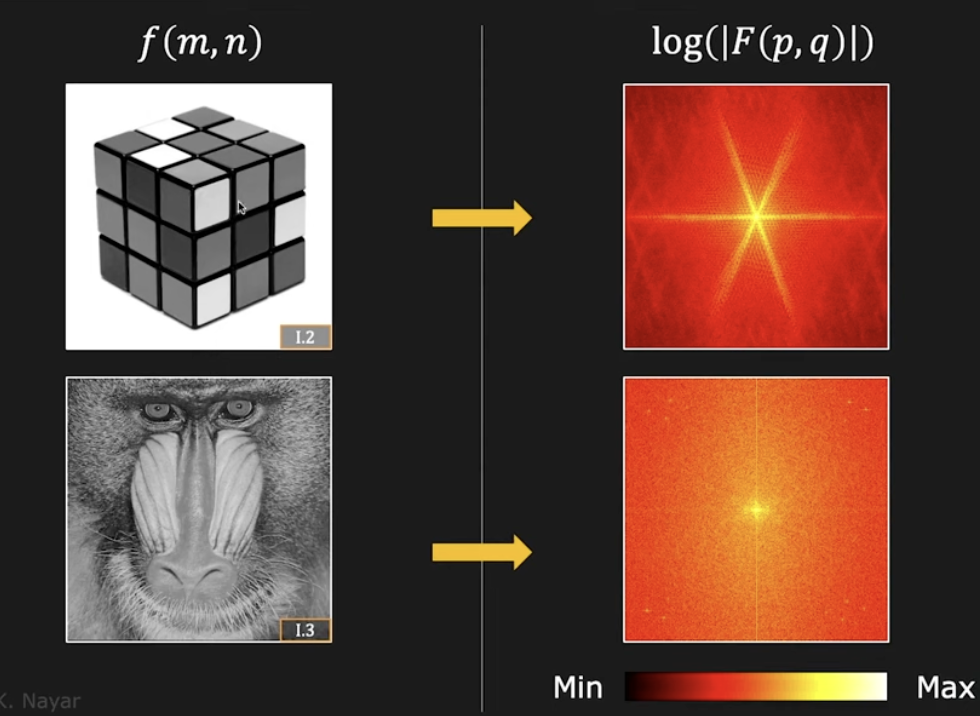
{kind=link}
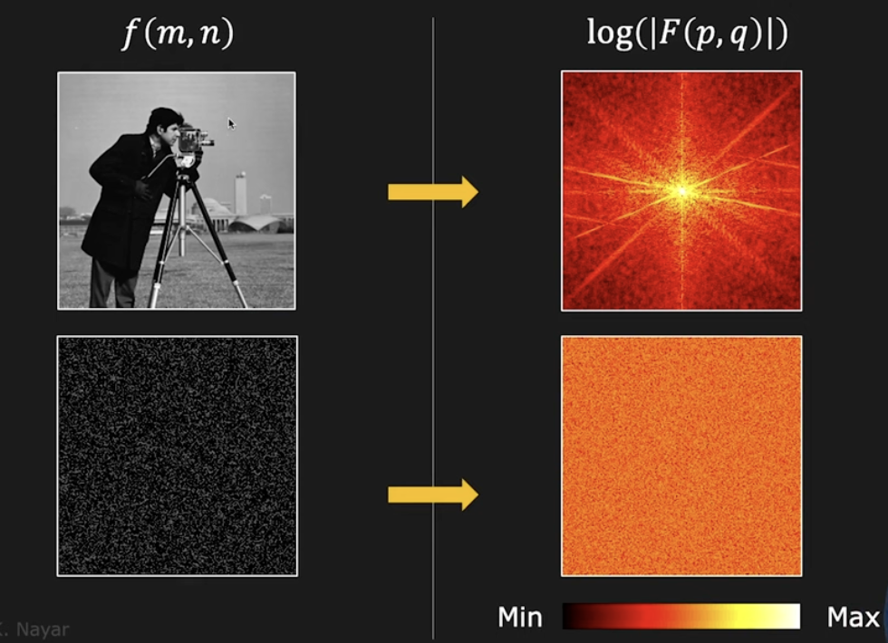
Image filtering in the frequency domain#
The values in the Fourier domain, usually called frequencies, have some useful properties for image manipulation, such as
Reduce the noise on the image (denoising)
Reduce the space occupied by the image (compression)
Denoising image with DFT
To denoise an image using a Fast Fourier Transform (FFT) filter, we can use a simple method of applying a low-pass filter in the frequency domain.
The idea is to suppress high-frequency noise, which typically exists in the higher frequencies of the Fourier spectrum, while preserving the low-frequency components, which generally correspond to the important structure of the image.
{kind=link}
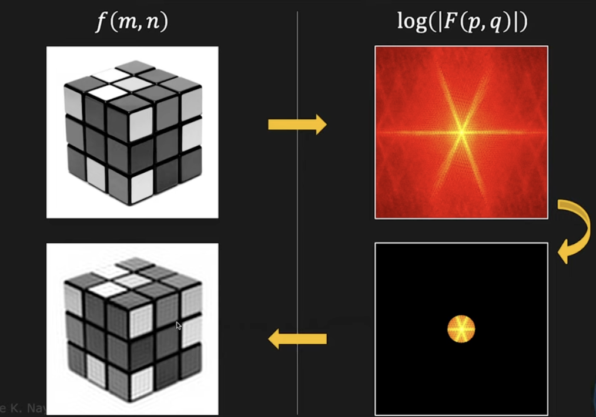
If you apply a more severe low-pass filter:
{kind=link}
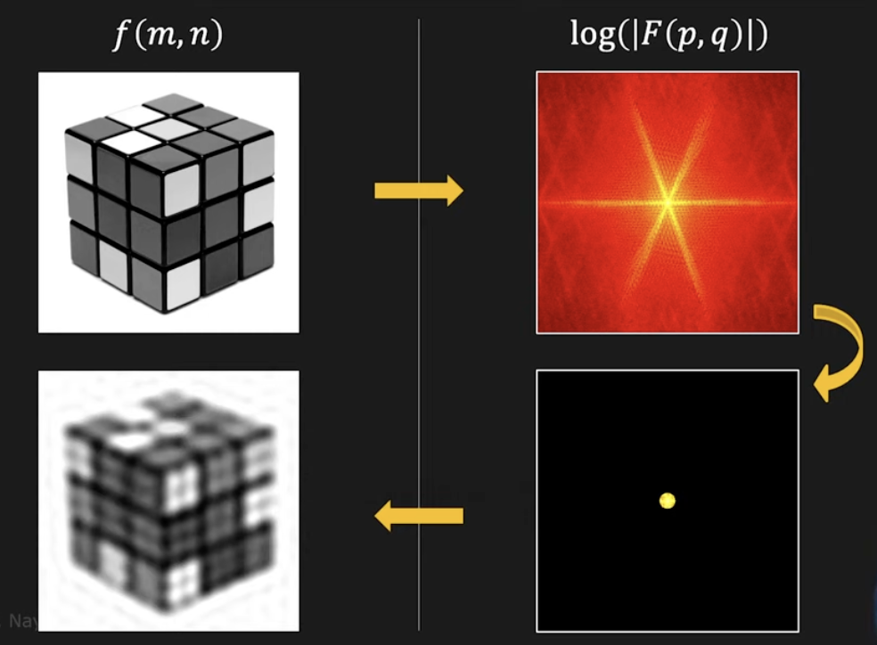
{kind=link}
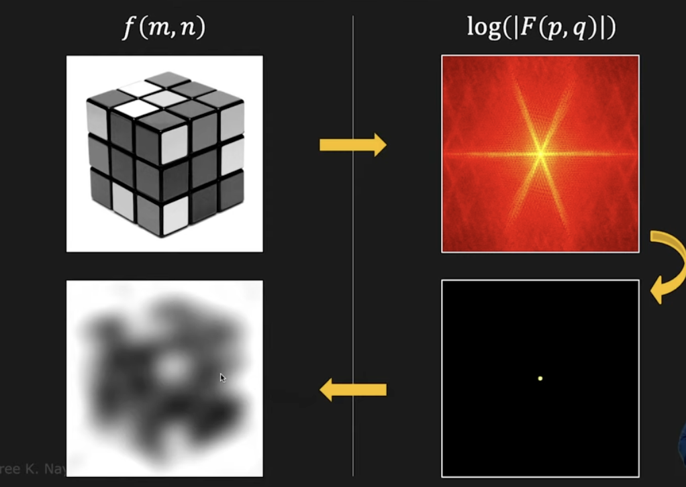
you obtain a burrier and blurrier image.
To reduce the ringing artifacts, you can apply a soft cutoff or smooth filter in the frequency domain. This can be done by using a smoother low-pass filter, such as a Gaussian filter or Butterworth filter, instead of a sharp circular mask. These filters gradually attenuate the high frequencies, which helps to avoid the abrupt transitions that lead to ringing.
If you conversely cut off the lower frequencies (high-pass filtering)
{kind=link}
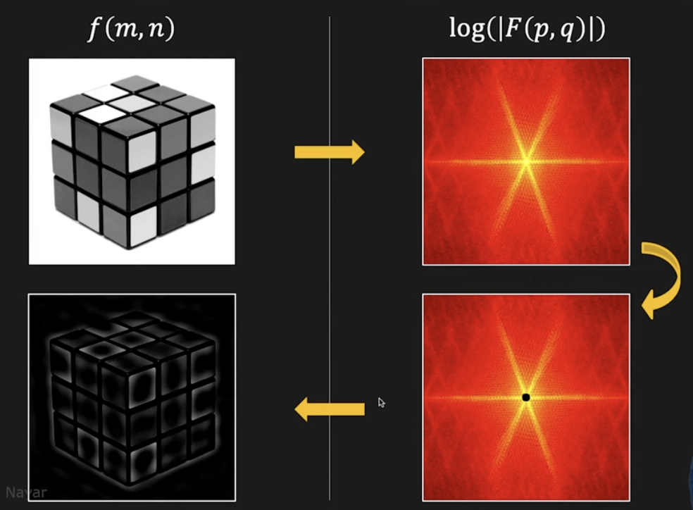
{kind=link}
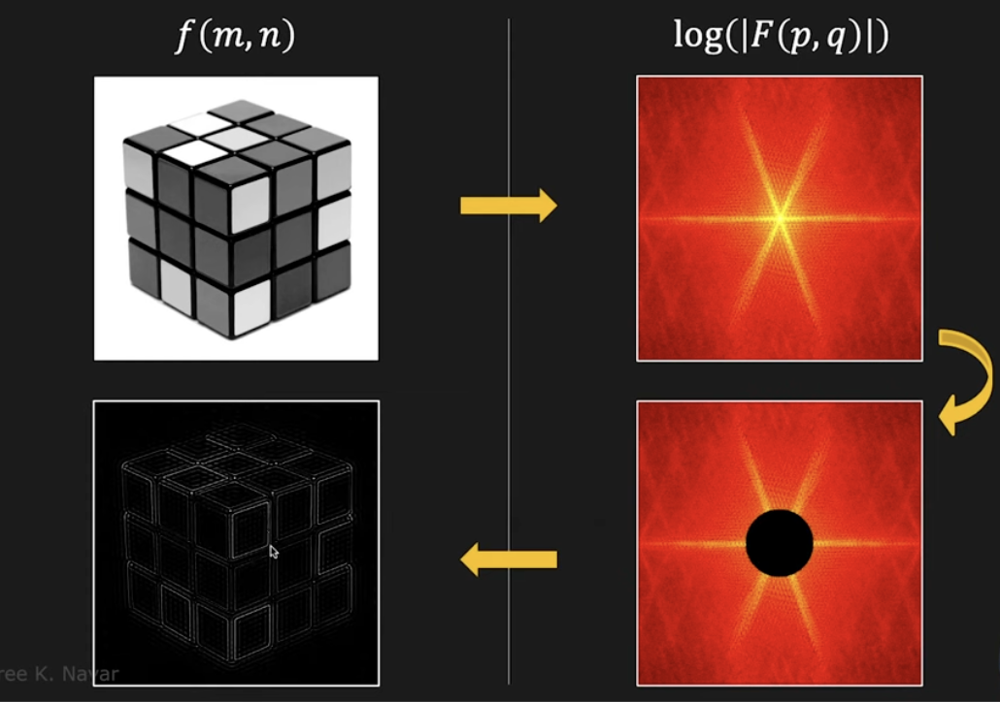
you essentially remove the constant bright regions and, increasing the filter intensity, you evidence the edges.
Let us see a python code to apply a low-pass filter to a noisy image:
Parameter: The cutoff_frequency defines how aggressive the denoising is. A higher value keeps more details but may allow some noise to persist, while a lower value results in stronger denoising but may also remove fine details.
import cv2
import numpy as np
import matplotlib.pyplot as plt
def denoise_fft(image_path, cutoff=30):
# 1. Load the image (grayscale for simplicity)
img = cv2.imread(image_path, cv2.IMREAD_GRAYSCALE)
img = img.astype(np.float64) / 255.0 # Normalizzazione
# add gaussian noise
noise = np.random.normal(0, 0.1, img.shape)
noisy_img = img + noise
# 2. FFT: Transform image to frequency domain
# We use fftshift to move the zero-frequency component to the center
f_transform = np.fft.fft2(noisy_img)
f_shift = np.fft.fftshift(f_transform)
# 3. Low-pass filter: Construct a circular mask
rows, cols = img.shape
crow, ccol = rows // 2, cols // 2
y, x = np.ogrid[:rows, :cols]
mask = ((x - ccol)**2 + (y - crow)**2 <= cutoff**2).astype(np.float64)
# 4. Apply the filter (fshift * mask)
f_shift_filtered = f_shift * mask
# 5. Inverse FFT: Transform back to spatial domain
# Shift back before performing inverse FFT
f_ishift = np.fft.ifftshift(f_shift_filtered)
img_back = np.fft.ifft2(f_ishift)
img_back = np.abs(img_back) # Get the magnitude
# --- Visualization ---
plt.figure(figsize=(15, 5))
plt.subplot(141), plt.imshow(img, cmap='gray')
plt.title('Original Image'), plt.axis('off')
plt.subplot(143), plt.imshow(np.log(1 + np.abs(f_shift)), cmap='gray')
plt.title('FFT Spectrum (Frequency Domain)'), plt.axis('off')
plt.subplot(144), plt.imshow(img_back, cmap='gray')
plt.title('Denoised Image (Low-pass Filtered)'), plt.axis('off')
plt.subplot(142), plt.imshow(noisy_img, cmap='gray')
plt.title('Noisy Image'), plt.axis('off')
plt.show()
# Run the function
denoise_fft('Baboon.bmp', cutoff=50)
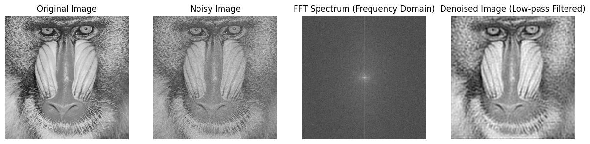
In these examples we have always considered (and visualized) the magnitude of the Fourier transform.
However the phase is very important. Here we apply a DFT2 to the image, we keep he magnitude and set all the phases to zero and then we apply an IDFT2.
{kind=link}
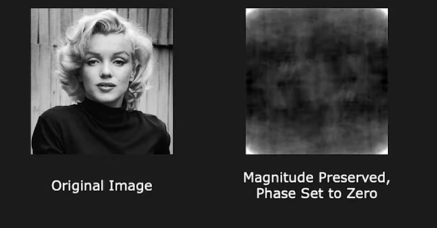
If you remove all the phase information, you obtain an image that is not recognizible.
If at the opposite we keep all the phases and set the magnitude to a constant value (for example the mean of the values) we obtain:
{kind=link}
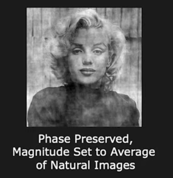
Another example:
{kind=link}
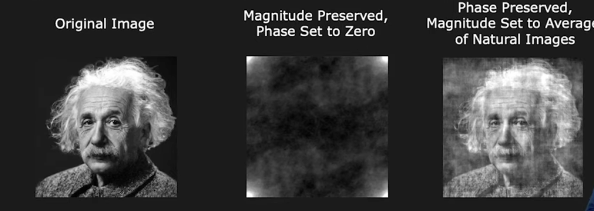
Hybrid images
{kind=link}
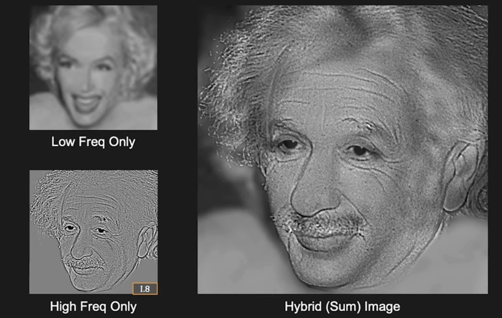
If you the image from near the screen you mainly see Albert Einstein, but if you are far from the screen you mainly see Marilyn Monroe. This is because from far you apply a sort of low-pass filter in your eyes.